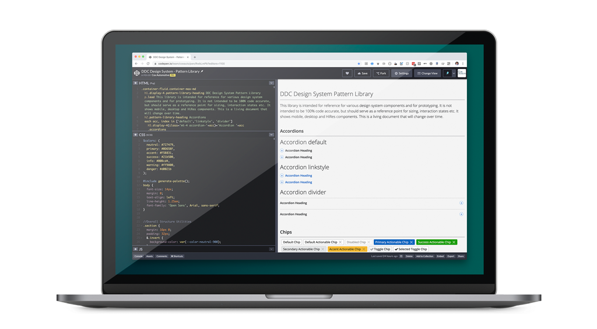
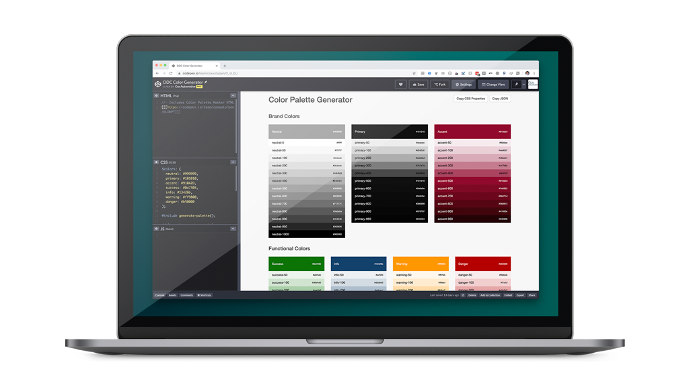

Challenges with the Atomic Design Model
As our design system expanded, so did the complexity of its components. Maintaining a single massive page for all components quickly became unsustainable. Furthermore, we encountered usability challenges with the Atomic Design model.
- **Findability Issues**: Designers and developers weren’t searching for "atoms/button"—they were simply looking for "button."
- **Ambiguity in Classification**: The distinction between molecules and organisms wasn’t clear to many users. For instance, should a dialog box be classified as a molecule or an organism? The distinction, while useful for internal alignment, didn’t add value for end-users.
To address these issues, we conducted research into best practices and engaged with our partners. The solution was straightforward: **list every component individually** rather than adhering strictly to the Atomic Design model. While the model remains valuable for understanding relationships internally, it was creating unnecessary friction for our design system’s consumers.
Evolving the Pattern Library
To enhance usability and scalability, we redesigned and expanded the pattern library with a more intuitive interface:
- **Left Side Panel**: A searchable list of all components for quick access to individual component pages.
- **Right Side Panel**: Configuration options for each component, allowing users to modify properties dynamically.
- **Center Display Area**: A dedicated space to showcase components along with code snippets, properties, documentation, and accessibility guidelines.
The components are fully dynamic and configurable. Users can see exactly how they behave, explore various properties and configurations, and share those out. The URL captures every aspect of the configuration, and these are even retained in local storage to persist settings between sessions. This also opens future possibilities, such as storing component configurations in JSON, which would allow passing configurations between Figma and the pattern library or vice versa.
Choosing the Right Documentation Tool
We explored **Storybook** as a potential solution but ultimately decided to document the design system using our own design system. This approach provided greater flexibility, ensured consistency with our existing tools and workflows, and allowed us to deeply integrate documentation with our component library. By leveraging our design system for documentation, we were able to create a seamless experience where component updates, design changes, and usage guidelines remain tightly coupled. Additionally, this approach enables better customization and scalability, giving us the freedom to evolve our documentation in ways that third-party tools couldn't accommodate.
Using Our Work
One of the great benefits of utilizing your own design system to build an application is that the team as a whole gains a greater appreciation for its value. By actively using the system in real projects, team members develop a deeper understanding of its strengths and limitations. They identify bugs more quickly, recognize feature gaps sooner, and contribute to continuous improvements. This hands-on experience fosters a culture of ownership and refinement, ensuring the design system remains relevant and highly functional. We found this to be particularly true in building a proper pattern library, so the design system itself benefitted.
Lessons Learned
Through this process, we discovered that simplicity and directness in taxonomy lead to a more intuitive experience. Designers and developers engage more effectively when components are listed in a straightforward manner without the constraints of a rigid classification system. Additionally, we learned that integrating interactive features, such as dynamic component configurations and persistent settings, significantly enhances usability. Providing clear documentation alongside real-time component previews also improved adoption and comprehension.
Future Plans
- **An In-Browser Configuration Tool**: This tool will allow for advanced configurations of multiple patterns and components, enabling the creation of highly advanced prototypes directly within the pattern library.
- **Integrated Accessibility Testing**: Adding accessibility testing results directly in the pattern library to ensure compliance and usability for all users.
- **Enhanced Data Sharing**: Investigating ways to store component configurations in JSON format, allowing seamless interoperability between Figma, the pattern library, and other design tools.
By continuously refining our approach and expanding functionality, we aim to make the pattern library an indispensable resource for our team and stakeholders.
Conclusion
A pattern library should prioritize usability and efficiency. Moving away from Atomic Design in our documentation has improved discoverability and streamlined the experience for our design system consumers. By implementing a structured yet flexible approach, we’ve created a resource that scales alongside our design system while remaining accessible to both designers and developers.